MinhajPeduli adalah platform donasi daring (crowdfunding) milik Yayasan Minhajul Misbah Al Jadid — Pondok Pesantren Al-Minhaj. Website ini memungkinkan siapa pun menyalurkan donasi untuk program-program pembangunan pesantren secara transparan, mulai dari memilih program, mengirim dana, mengunggah bukti transfer, hingga memantau laporan keuangan yang terbuka untuk umum.
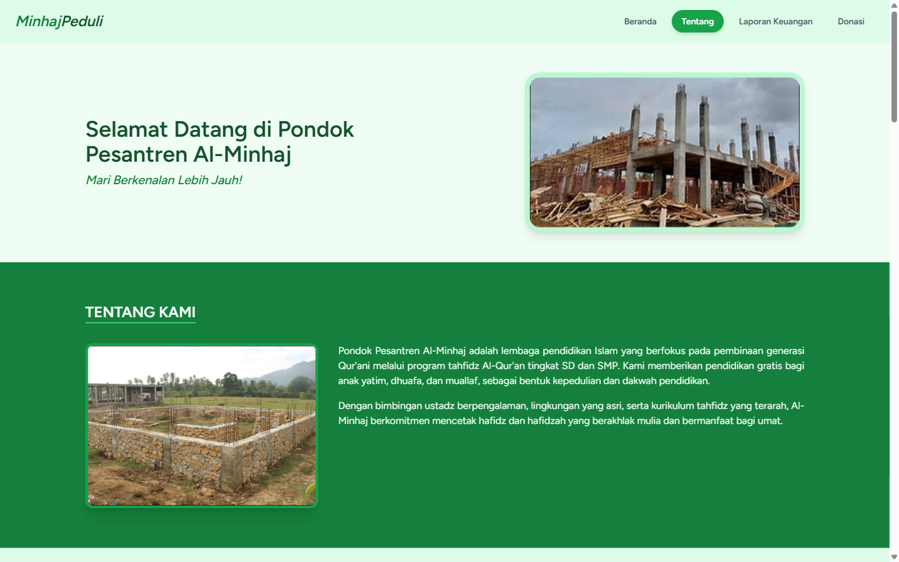
Setiap donasi melalui sistem ini diverifikasi secara manual oleh tim pengelola sebelum masuk ke dalam laporan keuangan publik. Sistem ini bersifat terbuka: setiap orang dapat melihat program, berdonasi, dan membaca laporan keuangan tanpa harus memiliki akun.
Alur donasi terdiri dari lima tahap utama:
Sistem menggunakan verifikasi manual — tidak ada pembayaran otomatis/gerbang pembayaran (payment gateway). Dana masuk langsung ke rekening yayasan, dan pengelola yang memverifikasi bukti transfer.
| Istilah | Penjelasan |
|---|---|
| Invoice | Nomor transaksi unik berformat MM + tanggal (6 digit) + 5 karakter acak, misalnya MM20261003QcXtx. Digunakan untuk mengidentifikasi donasi Anda. |
| Kode Unik | Tiga angka acak (1–999) yang diberikan sistem pada tiap donasi, misalnya 875. Tidak perlu ditransfer — total transfer tetap sama dengan nominal donasi. Kode ini hanya penanda transaksi. |
| Kode Kata | Dua huruf pertama dari judul program (inisial), ditampilkan pada halaman pembayaran sebagai penanda program. |
| Hamba Allah | Opsi anonimitas pada formulir donasi. Jika dicentang, nama Anda ditampilkan sebagai "Hamba Allah" di laporan keuangan publik. |
| Status Donasi | pending menunggu verifikasi · paid disetujui · failed ditolak/gagal. |
| Verifikasi Manual | Proses pemeriksaan bukti transfer oleh admin sebelum donasi tercatat resmi. |
Bab ini menjelaskan langkah berdonasi dari awal hingga selesai — ditujukan untuk pengunjung dan donatur.
Buka halaman utama website. Beranda memuat slider foto pesantren, ringkasan statistik (jumlah program, total dana terkumpul, jumlah donatur), serta daftar program donasi.
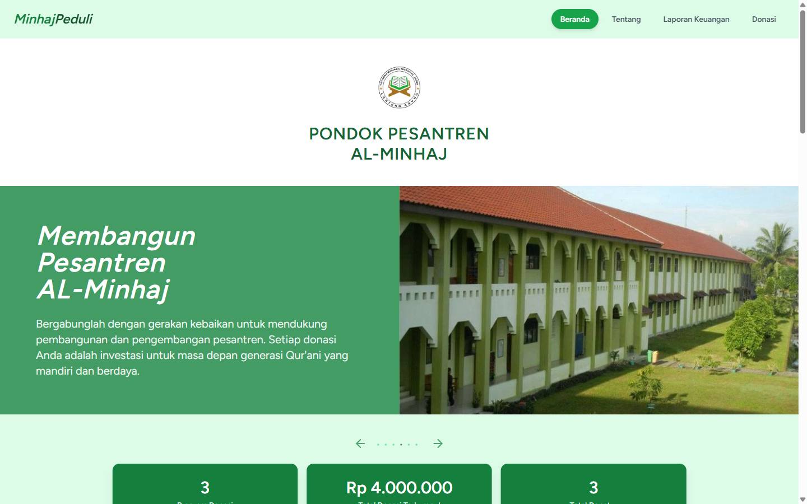
Untuk melihat seluruh program, klik menu Donasi pada navigasi atas. Di halaman ini Anda dapat:
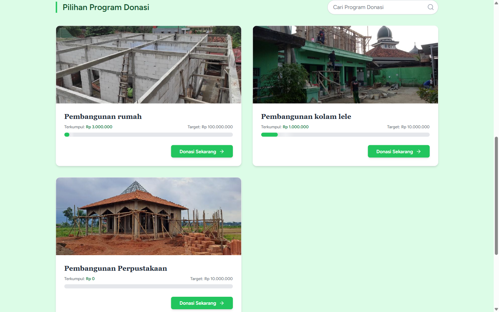
Klik tombol "Donasi Sekarang" pada kartu program, atau klik gambar/judul program untuk membuka halaman detail.
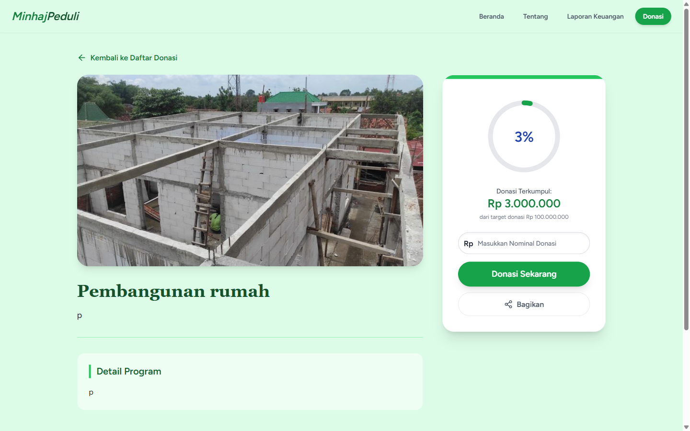
Pada kartu donasi di sebelah kanan, isi Nominal Donasi lalu klik "Donasi Sekarang".
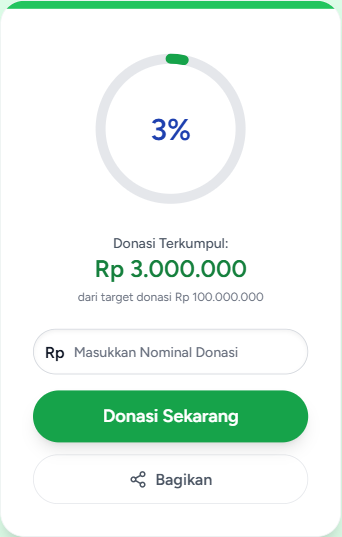
Nominal donasi minimal Rp 10.000. Jika kurang dari Rp 10.000 atau kolom dikosongkan, akan muncul peringatan: "Mohon masukkan nominal donasi minimal Rp 10.000 untuk melanjutkan."
Anda akan masuk ke halaman Formulir Donasi (tahap 1 dari 3 pada indikator di atas).
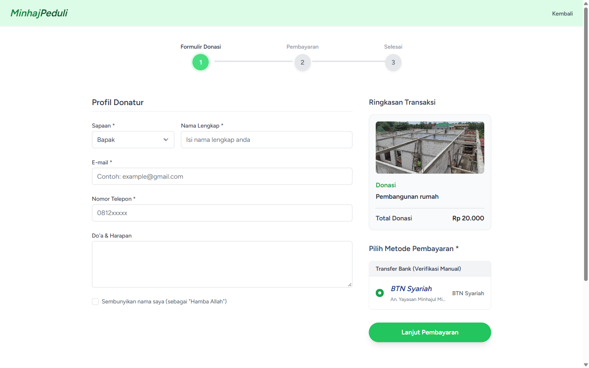
| Kolom | Keterangan |
|---|---|
| Sapaan wajib | Pilih Bapak / Ibu / Saudara / Saudari. |
| Nama Lengkap wajib | Nama Anda sesuai identitas. |
| E-mail wajib | Alamat email aktif (mis. example@gmail.com). |
| Nomor Telepon wajib | Nomor HP yang dapat dihubungi. |
| Do'a & Harapan | Opsional — ditulis pada kolom teks panjang. |
| Sembunyikan nama saya | Centang bila ingin nama tampil sebagai "Hamba Allah" pada laporan publik. |
Pada panel kanan, pastikan metode "Transfer Bank (Verifikasi Manual)" terpilih (satu-satunya pilihan, sudah tercentang otomatis). Perhatikan ringkasan transaksi: judul program dan Total Donasi sesuai nominal yang Anda masukkan.
Setelah semua data benar, klik tombol "Lanjut Pembayaran".
Setelah tombol diklik, sistem membuat nomor invoice dan memandu Anda ke halaman pembayaran. Jangan refresh berulang saat mengisi formulir.
Halaman ini menampilkan seluruh rincian yang Anda butuhkan untuk mentransfer dana.
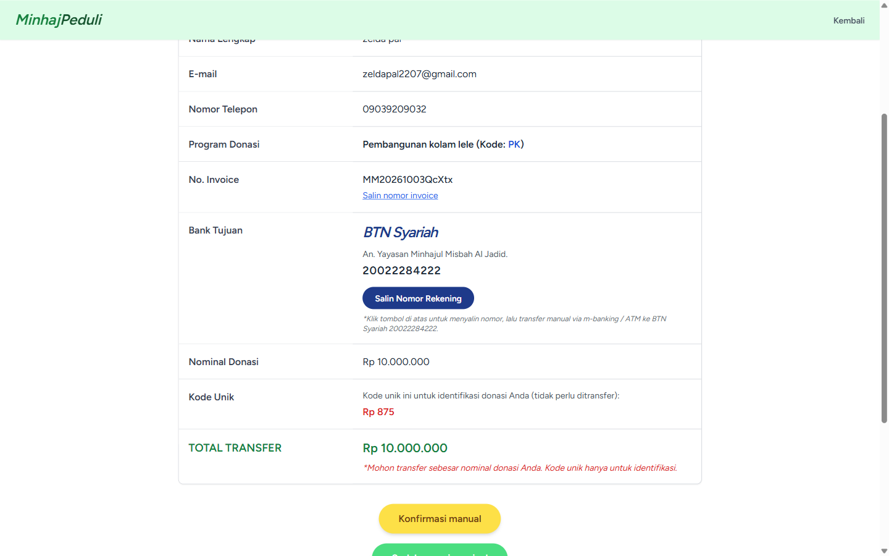
20022284222 a.n. Yayasan Minhajul Misbah Al Jadid).Jika nominal Anda Rp 10.000 dan kode unik 875, maka yang ditransfer tetap Rp 10.000 — bukan Rp 10.875. Kode unik hanya identifikasi sistem.
Blok QRIS ditampilkan hanya jika sudah dikonfigurasi pengelola. Saat ini fitur QRIS nonaktif — gunakan transfer bank seperti langkah di atas.
Halaman terakhir: lengkapi data pengiriman bukti transfer Anda.
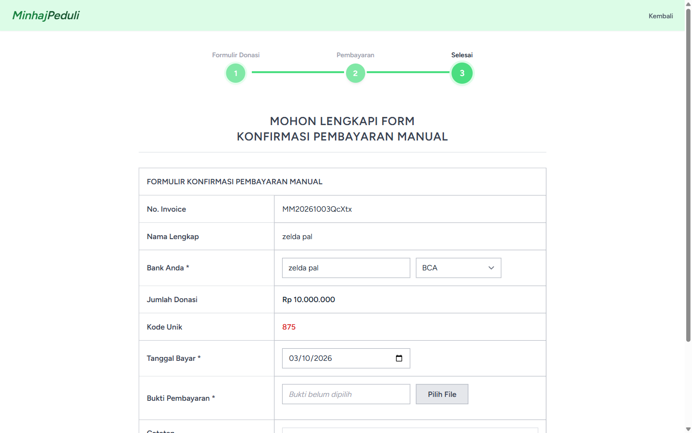
| Kolom | Keterangan |
|---|---|
| No. Invoice | Tampil otomatis (read-only) — terisi sesuai langkah sebelumnya. |
| Bank Anda wajib | Nama pemilik rekening asal transfer, lalu pilih BCA / BRI / MANDIRI / BNI pada dropdown bank pengirim. |
| Jumlah Donasi | Tampil otomatis (read-only). |
| Kode Unik | Tampil otomatis dalam format 3 digit, misalnya 875. |
| Tanggal Bayar wajib | Tanggal Anda mentransfer (default: hari ini). |
| Bukti Pembayaran wajib | Klik "Pilih File", pilih foto bukti transfer. Format: .jpg / .jpeg / .png, ukuran maksimal 2 MB. Pratinjau tampil setelah dipilih. |
| Catatan | Opsional — keterangan tambahan untuk pengelola. |
Terakhir, klik tombol "Konfirmasi Sekarang". Tunggu hingga muncul pesan sukses.
Saat ini donatur belum memiliki halaman khusus untuk melacak status donasi. Simpan nomor invoice Anda sebagai bukti, dan pantau perkembangannya melalui halaman Laporan Keuangan atau hubungi pengelola pesantren bila perlu konfirmasi.
Menu Laporan Keuangan terbuka untuk siapa saja. Halaman ini menampilkan:
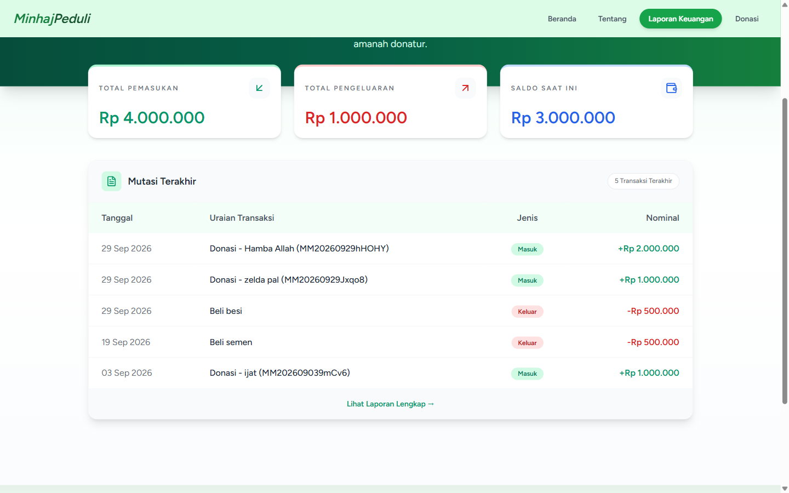
Donasi yang dicentang "Sembunyikan nama saya" tampil sebagai "Hamba Allah" pada laporan. Nama asli tidak pernah ditampilkan.
Pada halaman detail program, klik tombol "Bagikan" untuk membagikan program ke:
Bab ini ditujukan untuk pengelola yayasan yang mengoperasikan panel admin: memverifikasi donasi, mengelola program, mencatat pengeluaran, dan mengatur akun admin.
Super Admin — seluruh akses, termasuk menambah/menghapus/menyetujui akun admin lain.
Administrator — akses operasional (dashboard, donasi, program, pengeluaran, donatur, pengaturan), tanpa menu Kelola Admin.
Akun admin tidak dibuat sendiri oleh pengguna umum. Calon admin mengajukan diri:
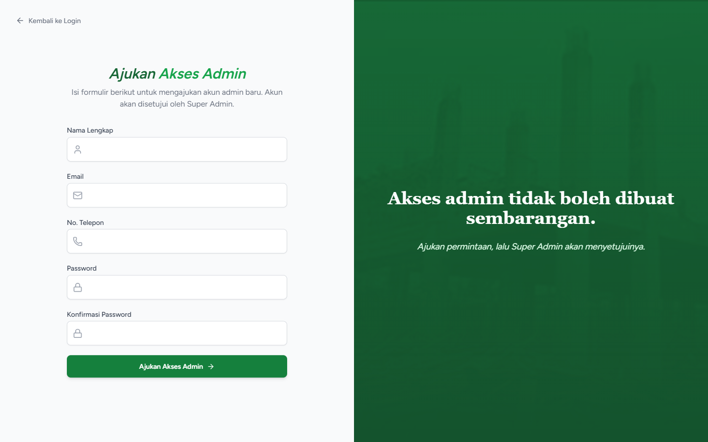
Akses panel di /admin/login. Masukkan email dan password, centang "Ingat saya" bila ingin sesi tetap aktif di perangkat tersebut, lalu klik "Masuk Dashboard".
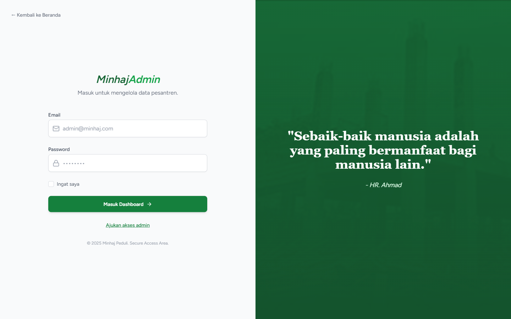
Login dibatasi 5 kali percobaan per email. Setelah lima kali gagal, akun dikunci sementara oleh sistem. Jika lupa password, gunakan Lupa Password — jangan menebak berulang kali.
Setelah masuk, Anda akan melihat panel dengan sidebar navigasi di kiri dan header profil di kanan atas.
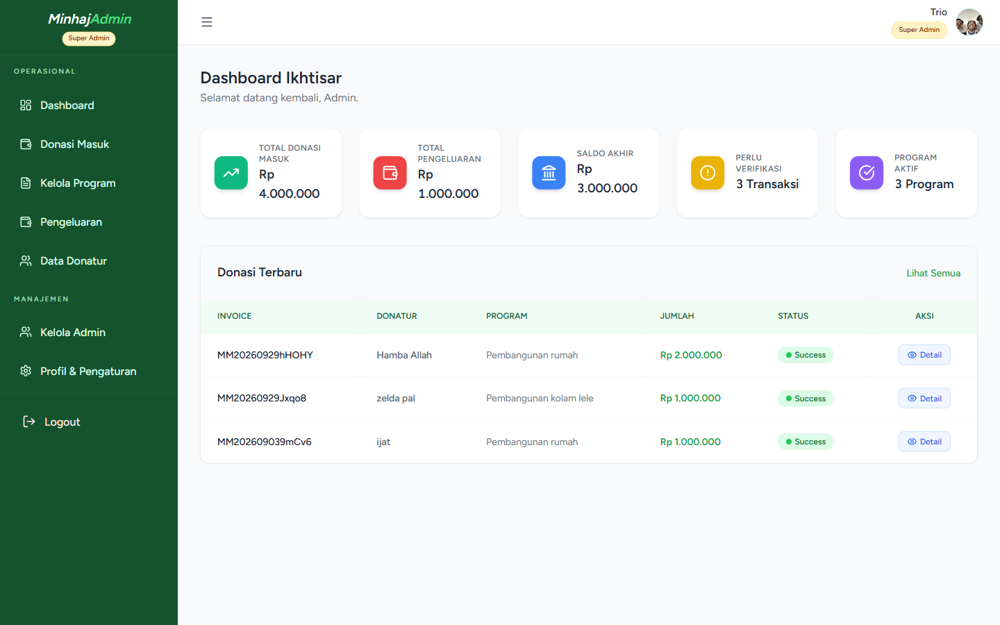
| Menu | Fungsi |
|---|---|
| Dashboard | Ikhtisar keuangan dan donasi terbaru. |
| Donasi Masuk | Verifikasi dan kelola seluruh donasi. |
| Kelola Program | Tambah, ubah, dan hapus program donasi. |
| Pengeluaran | Pencatatan pengeluaran yayasan. |
| Data Donatur | Daftar donatur teragregasi. |
| Kelola Admin | Khusus Super Admin — akun & persetujuan admin. |
| Profil & Pengaturan | Data diri, ganti password, info website. |
| Logout | Keluar dari panel (ada konfirmasi). |
Lencana peran (Super Admin / Administrator) tampil di bawah logo sidebar dan pada header profil.
Dashboard menampilkan lima kartu statistik:
Di bawahnya ada tabel Donasi Terbaru (5 transaksi terakhir) dengan tombol "Detail" untuk menuju halaman verifikasi. Klik "Lihat Semua" untuk membuka daftar lengkap.
Menu Donasi Masuk adalah pusat kerja verifikasi.
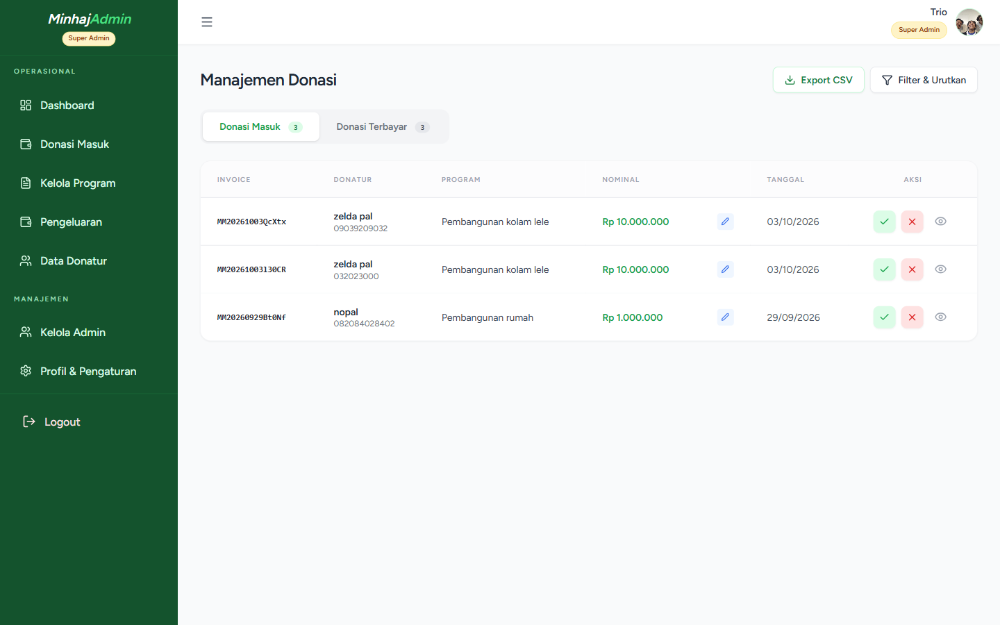
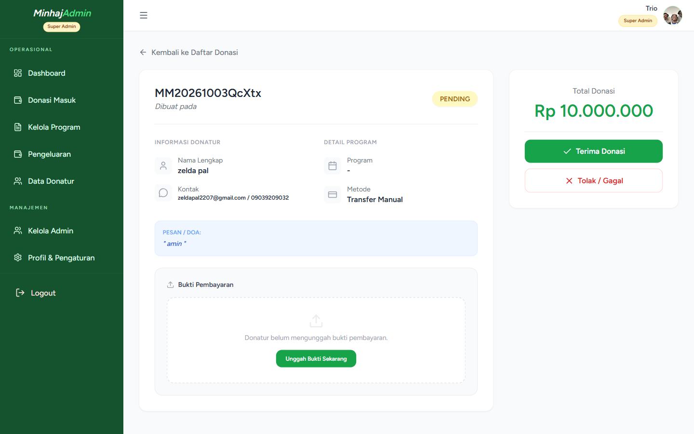
Donasi berstatus failed tidak tampil pada tab mana pun — periksa melalui riwayat bila diperlukan. Data statistik dan laporan hanya menghitung donasi berstatus paid.
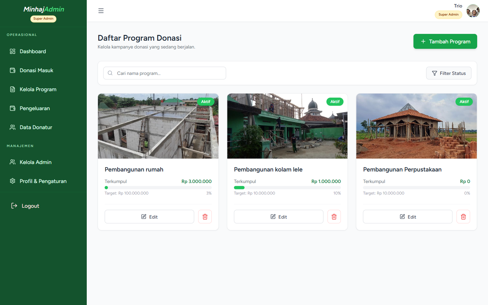
Menghapus satu program akan menghapus seluruh donasi yang terkait program tersebut beserta berkas bukti pembayarannya, dalam satu transaksi. Total donasi pada dashboard dan laporan akan berkurang otomatis. Yakin dulu sebelum menghapus.
Gunakan filter status (Semua / Aktif) dan kolom pencarian untuk menemukan program dengan cepat.
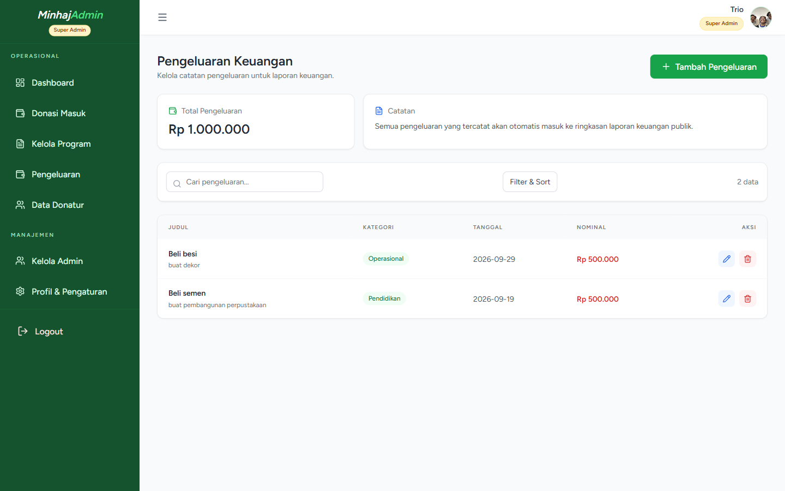
Data dapat dicari, difilter per kategori dan rentang tanggal, serta diurutkan berdasarkan tanggal atau nominal. Edit dan hapus tersedia pada tiap baris.
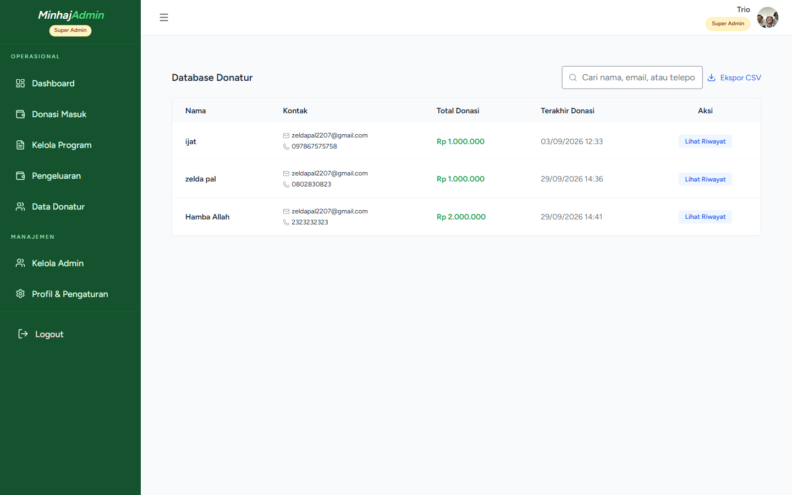
Halaman ini merangkum seluruh donasi berstatus paid menjadi satu baris per donatur: nama, kontak, total donasi, dan donasi terakhir.
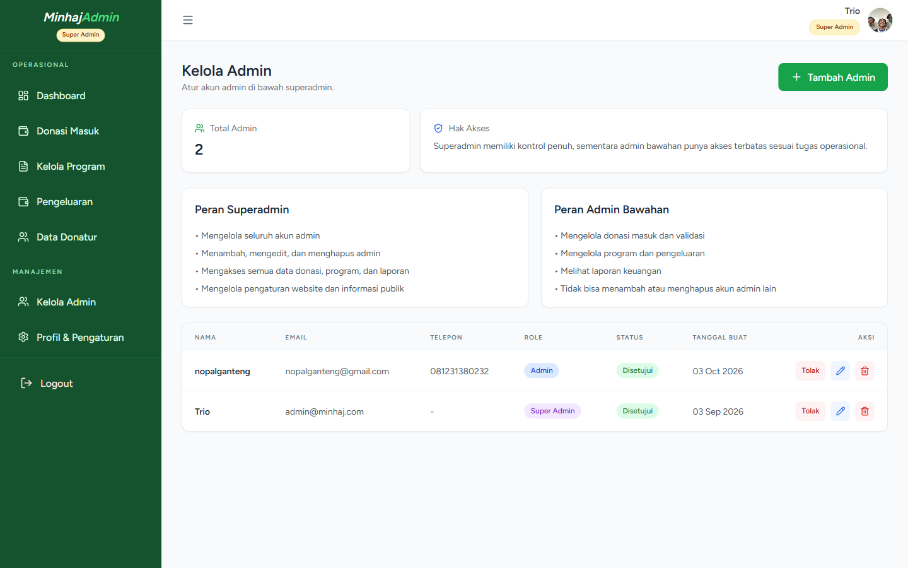
| Aksi | Keterangan |
|---|---|
| Tambah Admin | Buat akun baru langsung berstatus approved, dengan peran Admin atau Super Admin. |
| Setujui | Menerima pengajuan akun berstatus pending agar bisa login. |
| Tolak | Menolak pengajuan akun. |
| Edit | Ubah nama, email, telepon, password, atau peran. |
| Hapus | Menghapus akun admin. Anda tidak dapat menghapus akun Anda sendiri. |
Hanya Super Admin yang melihat menu ini. Bila ada calon admin yang mengajukan diri lewat halaman 3.1, setujui dari tabel ini sebelum ia bisa login.
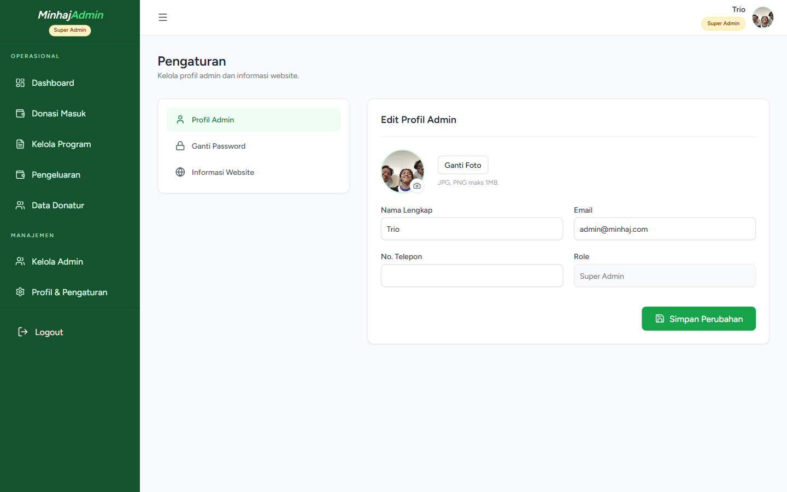
Tab Informasi Website hanya tampil bagi Super Admin.
↑ Kembali ke Daftar IsiSeluruh halaman — publik maupun panel admin — dapat diakses dari ponsel atau tablet. Tampilannya menyesuaikan ukuran layar (responsif).
Pada layar sempit, menu navigasi atas (Beranda, Tentang, Laporan Keuangan, Donasi) dirapatkan ke dalam satu tombol.
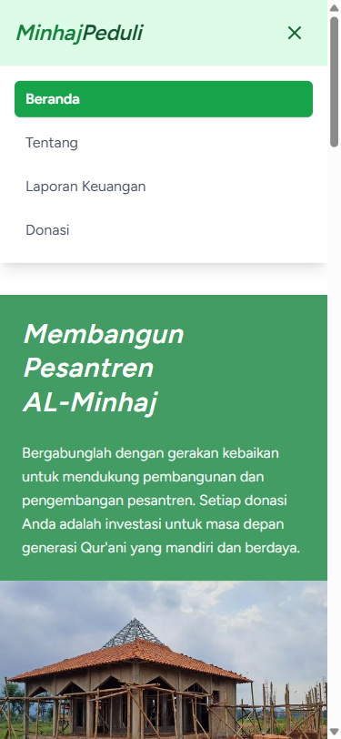
Panel admin di ponsel tidak lagi memampatkan konten — sidebar bersembunyi dan muncul sebagai laci (drawer) saat diminta.
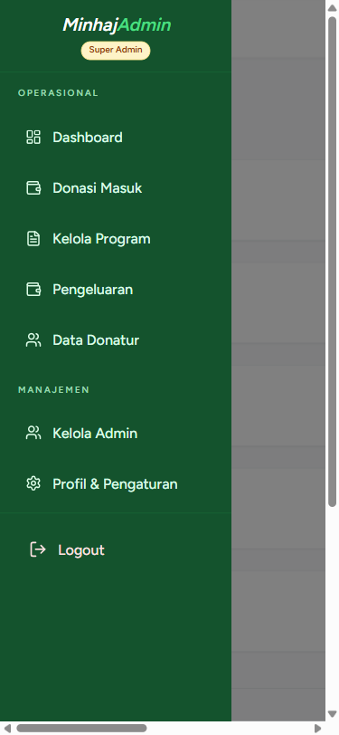
Bukti transfer dapat diperbesar dengan mengetuk gambar. Untuk verifikasi nominal besar, disarankan memakai layar yang lebih besar agar detail struk terbaca jelas.
| Pertanyaan | Jawaban |
|---|---|
| Saya sudah transfer, tetapi donasi masih "pending". Kenapa? | Donasi diverifikasi manual oleh pengelola. Status pending berarti bukti Anda menunggu pemeriksaan. Simpan nomor invoice dan hubungi pengelola bila perlu konfirmasi cepat. |
| Bagaimana cara mengecek apakah donasi saya sudah diterima? | Donasi yang diterima tampil pada halaman Laporan Keuangan (mutasi terakhir) sesuai nama Anda. Saat ini belum ada halaman pelacakan status khusus donatur — karena itu simpan nomor invoice. |
| Saya salah memasukkan nominal. Bisa diperbaiki? | Hubungi pengelola. Pengelola dapat mengoreksi nominal donasi (minimal Rp 1.000) dari halaman detail donasi. |
| Bukti pembayaran gagal diunggah. Kenapa? | Pastikan berkas berformat .jpg / .jpeg / .png dan ukurannya di bawah 2 MB. Ubah tangkapan layar menjadi JPG atau kompres gambarnya, lalu unggah ulang. |
| Saya centang "Sembunyikan nama saya", tetapi kenapa tetap muncul nama? | Jika centang tidak dicentang, nama tampil apa adanya. Dengan centang aktif, nama diganti menjadi "Hamba Allah". Pastikan mencentang opsi tersebut pada formulir donasi. |
| Perlu mentransfer kode unik juga? | Tidak. Kode unik hanya penanda transaksi. Transfer sesuai nominal donasi saja. |
| Kenapa saya tidak bisa login admin? | Periksa email & password. Setelah 5 kali salah, akun dikunci sementara oleh sistem. Gunakan Lupa Password bila perlu. Akun berstatus pending juga belum bisa login sampai disetujui Super Admin. |
| Email reset password tidak masuk. | Cek folder Spam/Junk. Pastikan email yang dimasukkan sama persis dengan email terdaftar pada akun admin. |
| Tombol QRIS tidak muncul. | Fitur QRIS belum dikonfigurasi pengelola. Gunakan transfer bank seperti panduan pada bagian 2.4. |
| Program saya terhapus dari website. | Menghapus program menghapus seluruh donasinya secara permanen. Konfirmasikan dulu dengan Super Admin sebelum menghapus. Bila terlanjur, program harus dibuat ulang. |
| Apakah ada biaya layanan? | Tidak ada potongan dari sistem. Transfer mengikuti ketentuan bank Anda masing-masing. |
| Pesan Error | Penyebab & Solusi |
|---|---|
| "These credentials do not match our records." | Email atau password salah. Periksa kembali; gunakan Lupa Password bila perlu. |
| "Akun admin Anda masih menunggu persetujuan Super Admin." | Akun berstatus pending. Hubungi Super Admin untuk menyetujui (bagian 3.9). |
| "Mohon masukkan nominal donasi minimal Rp 10.000…" | Nominal terlalu kecil. Masukkan minimal Rp 10.000. |
| Peringatan merah di bawah kolom formulir | Kolom wajib belum diisi atau formatnya salah (mis. email bukan format email). Lengkapi kolom bertanda *. |
| Gambar bukti/gambar program ditolak | Format harus .jpg/.jpeg/.png dan maksimal 2 MB (foto profil admin maksimal 1 MB). |
| Halaman tampil kosong / gagal muat | Segarkan halaman (F5 / tombol muat ulang). Jika berlanjut, bersihkan cache browser atau gunakan peramban lain. |
Ringkasan seluruh aturan validasi sistem untuk rujukan pengelola dan donatur.
| Objek | Aturan | Keterangan |
|---|---|---|
| Nominal donasi | Wajib, angka, minimal Rp 10.000 | Berlaku di sisi website & server. |
| Data donatur | Nama & email wajib (maks. 255 karakter); telepon wajib (maks. 20 karakter); doa opsional | Email harus berformat email. |
| Bukti pembayaran (donatur) | Wajib · gambar · .jpg/.jpeg/.png · maks. 2 MB | Disimpan pada server yayasan. |
| Bukti pembayaran (admin) | .jpeg/.png/.jpg · maks. 2 MB | Ganti bukti dari halaman detail. |
| Gambar program | Wajib saat tambah · .jpg/.jpeg/.png · maks. 2 MB | Saat edit, gambar bersifat opsional (pertahankan lama). |
| Foto profil admin | .jpg/.jpeg/.png · maks. 1 MB | Pengaturan → Profil Admin. |
| Target program | Wajib, angka, ≥ 0 | Dalam Rupiah. |
| Koreksi nominal (admin) | Angka, minimal Rp 1.000 | Ikon pensil pada tabel donasi. |
| Status donasi | pending · paid · failed | Hanya paid yang dihitung statistik/laporan. |
| Password admin | Minimal 8 karakter, konfirmasi ganda | Berlaku untuk tambah admin, ajukan akses, dan ganti/reset password. |
| Pengeluaran | Judul, kategori, nominal (≥ 0), tanggal wajib | Kategori: Operasional · Konsumsi · Pendidikan · Program · Lainnya. |
| Login admin | Maks. 5 percobaan per email | Setelah itu terkunci sementara. |
| Bank | BANK BTN SYARIAH |
|---|---|
| Nomor Rekening | 20022284222 |
| Atas Nama | Yayasan Minhajul Misbah Al Jadid |
| QRIS | Belum dikonfigurasi (nonaktif) — gunakan transfer bank. |
| Website | pesantrenalminhaj.com |
Selalu cocokkan nomor rekening di atas dengan yang tampil pada halaman pembayaran sistem sebelum mentransfer dana.
Manual Pengguna MinhajPeduli Versi 1.0 — Oktober 2026. Disusun untuk keperluan penggunaan website donasi Pondok Pesantren Al-Minhaj. Untuk mencetak: buka file ini di peramban, tekan Ctrl+P (Windows) atau Cmd+P (Mac), lalu pilih Save as PDF.